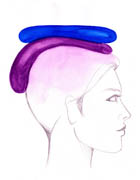
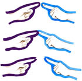
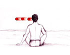
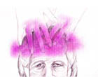

1.
The beginning of my real life
2.
The moment I first saw the aura
3.
The game of the Light
4.
A Prayer towards everyone and everything
5.
I can see my aura
6.
Truths are revealed one after the other
7.
Who should I thank for the exquisite spectacle?
8.
The celebration of souls
9.
The union with the higher Self
10.
Watching the aura makes me happy
11.
Unification of the bodies - Unification of the souls
12.
I can stay "here" forever
13.
The messages we don't want to see
14.
The aura of the Sun
15.
We are inside His Body
16.
Thank you, Lord,�Thank you, my friend
17.
Every man bears his own light
inside the omnipresent and all fulfilling Being
18.
"I would like to be the Sky, to see you with an infinite eye"
19.
The vision of the Light heals my soul
20.
I literally see the Love - Light
21.
The point we "vanished" and where we shall return
22.�
�You know me, you've seen me before�
23.
I trust my instinct
24.
Rainbows travelling at the speed of light
25.
The portrait of a friend
26.
The portrait of another friend
27.
The portrait of a friend and his energy enhancement
28.
The supernatural is also a natural world
29.
I see inspiration literally
30.
I observe the change in my aura
31.
Questions and answers on what I see
32.
Look at the Violet Light
33.
A systematic observation of the aura
34.
The day when the Masters appeared
35.
The etheral forms and the laver
36.
The quest for the aura continues
37.
Love will fill everything
38.
Analogies ...
39.
I literally see what they call a miracle
�
40.
I see our guides
41.
I see the aura of a friend
42.
We heal ourselves by connecting
with the Light
43.
"Free your inner angel from prison"
44.
A salute from the spiritual world
45.
The abolition of space
46.
When we open ourselves to the Light, all our senses broaden
47.
The ... young ghosts
48.
The real Christmas!
49.
The Unicorns and the Centaurs
50.
My Guide
51.
The universe has a sense of humour
52.
Fear, illness and the cure
53.
A friend's eight year old daughter
54.
The fireworks remind us of the spiritual world
55.
I see the Star
56.
The energy transfer
57.
The true meaning of the "blue blooded" Royals
58.
I also see my friend's aura when she's not here
59.
Love unites the natural and the etheral world
60.
In order to meet the Guide "descends" and we "ascend"
61.
The Masters are sending Light to the Plan




Back